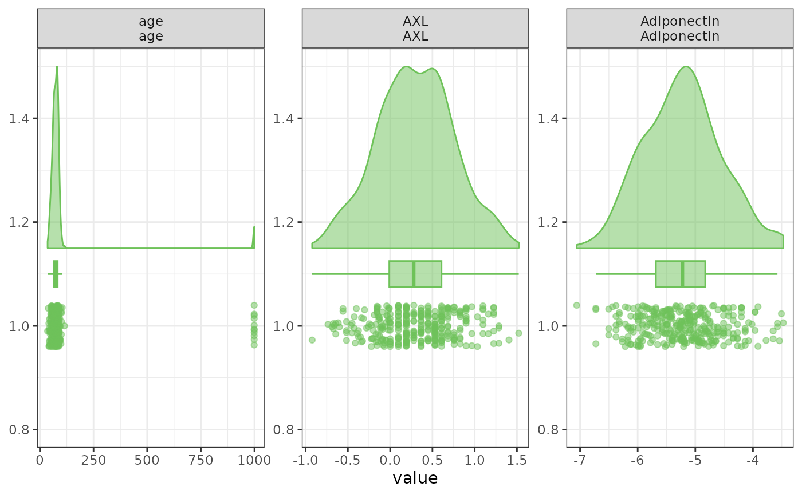

Plot Continuous Distributions
Source:R/PlotContinuousDistributions.R
PlotContinuousDistributions.RdCreates rain-cloud plots (half-violin + box/median + scatter) for one or more continuous variables, with optional group-wise colouring.
Usage
PlotContinuousDistributions(
data,
variables = NULL,
Fill = NULL,
Relabel = TRUE,
FacetLabelStyle = c("both", "label_only", "variable_only", "auto"),
ncol = 3,
Ordinal = lifecycle::deprecated(),
TreatOrdinalAs = "Categorical",
DataFrame = lifecycle::deprecated(),
Variables = lifecycle::deprecated()
)Arguments
- data
A data frame containing the variables to be plotted.
- variables
Character vector of column names to plot.
- Fill
Optional column name for grouping.
- Relabel
Logical; use variable labels when available.
- FacetLabelStyle
One of "both", "label_only", "variable_only", "auto".
- ncol
Number of columns in the facet grid.
- Ordinal
Deprecated logical compatibility option; use
TreatOrdinalAsinstead.- TreatOrdinalAs
How ordinal variables are handled.
"Continuous"includes their numeric score;"Exclude"omits them."Both"is not meaningful for this plot and errors.- DataFrame
Deprecated (since 19.15.0). Use
datainstead.- Variables
Deprecated (since 19.15.0). Use
variablesinstead.
Examples
data(SampleData)
data(SampleVariableTypes)
Labelled <- RevalueData(SampleData, SampleVariableTypes)$RevaluedData
PlotContinuousDistributions(
Labelled,
variables = c("age", "AXL", "Adiponectin")
)
#> Registered S3 methods overwritten by 'ggpp':
#> method from
#> heightDetails.titleGrob ggplot2
#> widthDetails.titleGrob ggplot2
#> Warning: Removed 11 rows containing non-finite outside the scale range
#> (`stat_half_ydensity()`).
#> Warning: Removed 11 rows containing non-finite outside the scale range
#> (`stat_boxplot()`).
#> Warning: Removed 11 rows containing missing values or values outside the scale range
#> (`geom_point_sorted()`).
